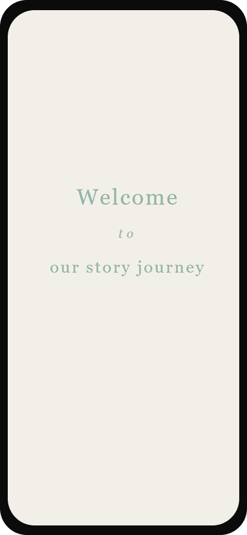
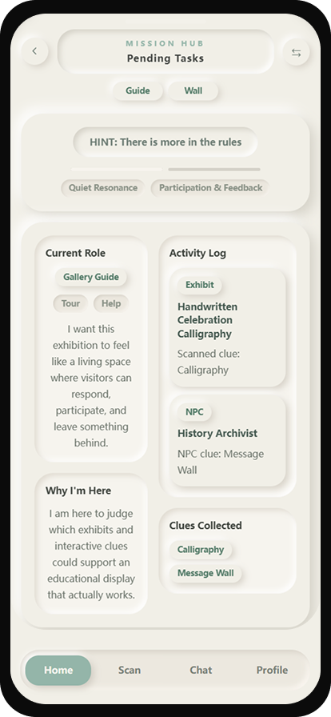
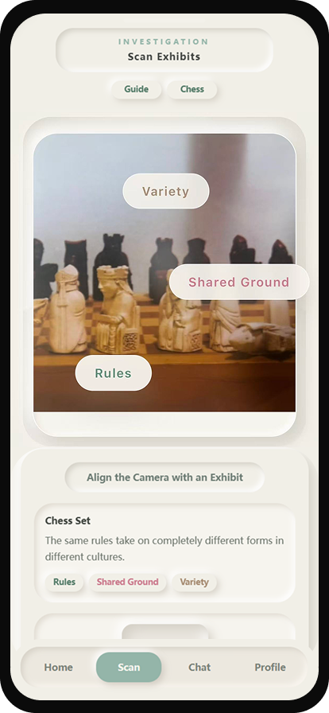
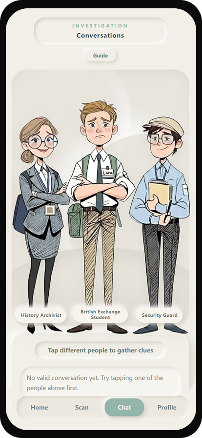
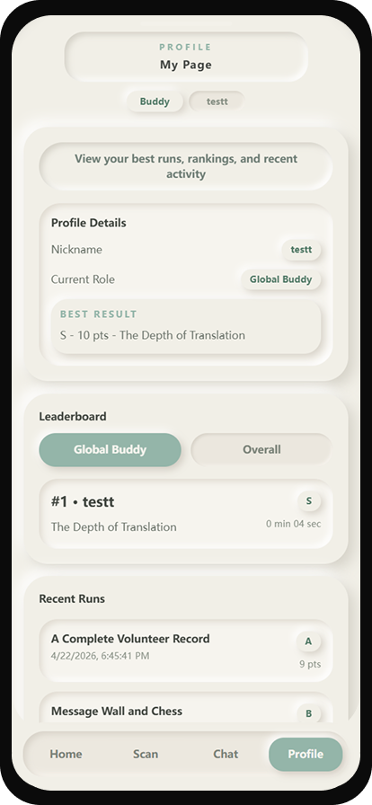
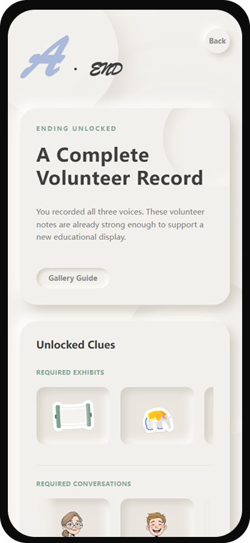

Final Concept
1. Final Concept Overview
The final concept of Museum Tales is a Web AR-based interactive storytelling experience designed for the Xi’an Jiaotong-Liverpool University Museum. Instead of presenting the museum as a passive space for viewing exhibits and reading information, the project transforms the visit into an active narrative journey where users take on a role, explore exhibits, talk to virtual characters, collect clues, reconstruct a story, and unlock a personalised ending.
Compared with the early concept, the final version is no longer just an AR information display tool. It combines role-playing, exhibit scanning, NPC dialogue, clue collection, story reconstruction, and leaderboard feedback into one complete museum experience. The final concept aims to make museum learning more immersive, guided, playful, and emotionally engaging.
2. Final User Flow
The final user journey follows a clear story-driven structure:
Welcome → Choose Role → Mission Hub → Scan Exhibits → Talk to NPCs → Reconstruct Story → Unlock Ending → Check Profile / Ranking
The experience begins with a welcome page that introduces users to the story journey. Users then choose a role, which gives them a specific identity and perspective within the museum narrative. After entering the Mission Hub, users can check their current role, pending tasks, collected clues, and activity progress.
Next, users scan exhibits or cultural postcards to unlock related story fragments and clue keywords. These clues guide them to interact with NPCs, where they can ask questions and gather more narrative information. Once enough clues have been collected, users enter the story reconstruction stage, where they need to interpret the clues and complete the hidden story. Finally, the system presents the user’s ending, score, level, and unlocked clues. Users can also check their ranking and review their records in the Profile page.
3. Core Experience Features
Role-based Exploration
Users begin the experience by selecting an identity, such as a museum-related role or story participant. This role shapes how users understand the exhibits, tasks, and clues. Instead of acting as ordinary visitors, users enter the museum with a purpose and perspective, which strengthens immersion and encourages replay.
AR Exhibit Scanning
The scanning function connects physical museum objects or cultural postcards with digital story content. By scanning an exhibit, users unlock related clues, keywords, or story fragments. This creates a direct connection between the real museum space and the digital narrative experience.
NPC Dialogue
NPCs act as narrative guides and information sources. Users can talk to virtual characters to understand the meaning behind exhibits, verify clues, and move the story forward. Compared with static text descriptions, NPC dialogue makes the experience feel more interactive, personal, and story-driven.
Clue Collection
Clues are collected through exhibit scanning and NPC conversations. They help users gradually understand the hidden narrative behind the museum objects. The clue system gives users a sense of progress and encourages them to explore different parts of the experience.
Story Reconstruction
The story reconstruction stage changes the experience from passive information receiving to active reasoning. Users need to use the clues they have collected to infer the key meaning of the story. This makes the final task more meaningful and helps users reflect on the relationship between exhibits, characters, and narrative context.
Ending and Leaderboard
After completing the story reconstruction, users unlock a personalised ending, score, and level. The leaderboard and profile system allow users to compare results, review recent records, and replay the experience with different roles. This adds lightweight gamification and increases long-term engagement.
4. Final Visual System
The final visual system uses a soft, light, and museum-friendly design style. Compared with the early black-and-neon prototype, the final interface adopts a cream and light-gray background with low-saturation green accents. This creates a calmer and more approachable atmosphere that better matches the cultural and narrative context of the museum.
The interface uses a neumorphic visual style, including rounded cards, soft shadows, subtle raised effects, and concave button feedback. This gives the interface a gentle tactile feeling while keeping the overall design modern and clean. Card-based layouts are used throughout the system to organise roles, tasks, clues, conversations, results, and rankings clearly.
The final visual system aims to balance usability and immersion. It reduces the reading pressure of earlier text-heavy interfaces, improves visual hierarchy, and helps users understand where they are in the story journey.
5. How the Concept Turns Museum Visiting into a Story Experience
Museum Tales transforms the museum visit from passive observation into active storytelling. In a traditional museum visit, users often read descriptions, look at objects, and move through the space without a strong personal connection to the exhibits. In this project, users are not only viewers; they become participants in a narrative.
By choosing a role, users enter the story from a specific perspective. By scanning exhibits, they uncover fragments of the narrative. By talking to NPCs, they interpret these fragments through character-based dialogue. By reconstructing the story, they actively connect clues and form their own understanding of the hidden meaning behind the exhibits.
This structure turns each exhibit into part of a larger narrative system. The museum is no longer only a place for displaying objects, but becomes a space for exploration, questioning, discovery, and story-making.
6. Final User Experience
The final user experience is designed to be clear, guided, and immersive. Users first enter the experience through a simple welcome page, which sets the emotional tone of the story journey. They then select a role, giving them a sense of identity and purpose.
After entering the Mission Hub, users can understand their current task and progress. They scan exhibits or postcards to collect clues, then talk to NPCs to gain further information. The system gradually guides users from exploration to interpretation. Once users have enough clues, they complete the story reconstruction task and unlock their ending.
The final experience forms a complete loop:
Enter the story → Choose identity → Explore exhibits → Collect clues → Talk to characters → Reconstruct meaning → Unlock ending → Review result








This loop makes the interaction easy to follow while still allowing users to feel like they are actively discovering the story.
7. Problems Solved from the Early Concepts
The final concept directly responds to several problems identified in the early design stage.
First, the early concept risked becoming a simple AR information display system. The final version solves this by adding role-playing, NPC dialogue, clue reasoning, and story reconstruction, making the experience more interactive and narrative-driven.
Second, early interaction ideas could cause information overload, especially when users were given too many NPCs, clues, or instructions at once. The final concept uses guided task progression, Mission Hub organisation, and clue-based interaction to help users understand what to do next.
Third, the early UI was more technical and prototype-like, with heavy text blocks and less emotional atmosphere. The final visual system uses softer colours, card-based layouts, and neumorphic design to create a more polished, approachable, and museum-appropriate interface.
Fourth, the early experience lacked strong replay motivation. The final version introduces endings, scores, levels, rankings, and profile records, encouraging users to replay the experience with different roles or improve their results.
8. Final Design Principles
The final concept is guided by four main design principles.
Narrative-first Interaction
Every major interaction supports the story journey. Role selection, scanning, NPC dialogue, clue collection, reconstruction, and endings are all connected to the narrative rather than existing as separate functions.
Guided Exploration
The system gives users enough freedom to explore, but also provides clear guidance through the Mission Hub, clue system, NPC interaction logic, and task progression. This helps reduce confusion and keeps the experience smooth.
Role-based Immersion
Users are encouraged to experience the museum through a chosen identity. This makes the visit more personal and gives users a stronger reason to engage with exhibits, clues, and characters.
Soft and Accessible Visual Experience
The final interface uses a light colour palette, clear hierarchy, card-based structure, and neumorphic visual style. This makes the system easier to understand, more comfortable to use, and more suitable for a museum storytelling context.
Final Summary
Overall, the final concept of Museum Tales creates a complete Web AR museum storytelling experience. It connects physical exhibits with digital interaction, transforms visitors into story participants, and combines education, exploration, narrative, and gamification. Through role-based exploration, AR scanning, NPC dialogue, clue reconstruction, and leaderboard feedback, the project turns museum visiting into an immersive and replayable story journey.